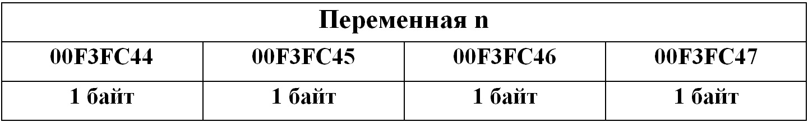
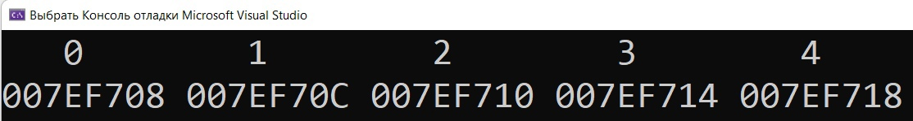

Указатели
Указатель – это переменная, которая хранит адрес области памяти. Чтобы объявить указатель,
необходимо определить тип переменной, адрес которой он будет хранить.
Например, объявление указателя p типа int:
int* p;
Указатель можно разыменовать (*), то есть получить значение ячейки памяти, на которую ссылается указатель.
Чтобы определить адрес переменной используется знак амперсанд (&).
Например:
1
2
3
4
5
6
7
8
9
10
#include<stdio.h> #include<stdlib.h> int main() { int n = 10; int* p; p = &n; printf("%p\n", p); // адрес n printf("%i", *p); // значение n return 0; }
Арифметика указателей
К указателям также можно применять арифметические операции. В примере выше, адрес переменной n равен 00F3FC44. При каждом новом запуске программы
адрес переменной n будет меняться. Для нашей архитектуры тип int занимает 4 байта памяти. Соответственно переменная n будет занимать
адреса 00F3FC44, 00F3FC45, 00F3FC46, 00F3FC47.

То есть указатель хранит только первый адрес элемента. Тип данных для указателя нужен, чтобы указатель мог взять нужное количество
байт после этого адреса.
Если мы захотим к указателю p применить, например, операцию сложения на N, то p измениться на N*sizeof(тип).
Давайте посмотрим на массив m, состоящий из 5 элементов:
1
2
3
4
5
6
7
8
9
10
11
12
13
#include<stdio.h> #include<stdlib.h> int main() { int m[5]; int* p = &m; int* q = &m[0]; for (int i = 0; i < 5; i++) { m[i] = i + i * i; } printf("%i\n", m[2]); printf("%i\n", *(p + 2)); return 0; }
Память под элементы в массиве выделяется подряд, в отличие от обычных переменных, память под которые выделяется в любом свободном месте, главное
чтобы хватило места. Массив m будет хранить адрес, с которого начинается область памяти, выделенная под элементы, поэтому элемент m[2] будет равен *(p + 2).
И поэтому же q и p будут хранить один и тот же адрес.
Давайте выведем все адреса элементов массива:
1
2
3
4
5
6
7
8
9
10
11
12
13
14
15
16
17
18
#include<stdio.h> #include<stdlib.h> int main() { int m[5]; int* p = &m; for (int i = 0; i < 5; i++) { m[i] = i + i * i; } for (int i = 0; i < 5; i++) { printf("%4d ", i); } printf("\n"); for (int i = 0; i < 5; i++) { printf("%p ", p); p++; } return 0; }
Результат выполнения программы:

1 строка - индексы элементов;
2 строка - адреса элементов соответственно.
Каждый элемент можно расписать так же, как и в таблице выше.
Для чего нужны указатели
Указатели широко используются в программировании на языке Си.
Например, в функциях. Дело в том, что функции в Си принимают аргументы, передавая или копируя значения в стек функции.
Все изменения переменных в функции останутся в ней, то есть значения передаваемых переменных не изменятся вне этой функции.
Мы можем только вернуть какое-то значение с помощью return. Но зная адрес памяти переменной, мы напрямую можем изменить ее значение.
Например, рассмотрим функцию F, в которую передаем указатель на переменную c, после чего внутри функции, используя операцию разыменования,
изменяем значение этой переменной:
1
2
3
4
5
6
7
8
9
10
11
12
13
14
15
#include<stdio.h> #include<stdlib.h> void F(char* p) { *p = 'Z'; } int main() { char c = 'A'; char* p; p = &c; F(p); printf("%c", c); return 0; }
Указатели также используются для динамического выделения памяти.
Указатели широко используются в программировании на языке Си. Например, для динамического выделения памяти, которое используется во множестве программ.
Навигация по странице:
1. Указатель это
2. Арифметика указателей
3. Массивы и указатели
4. Для чего нужны указатели
Code.C
© Copyright Павел Калашников 2021
обратная связь code.c04@mail.ru